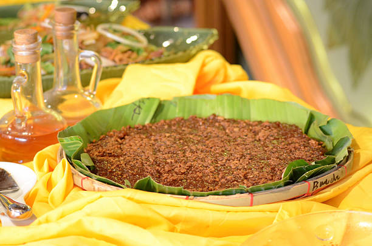

Biko
Biko is a traditional Filipino dessert made with glutinous rice, coconut milk, and brown sugar. It’s often topped with latik (coconut curds) for added flavor and texture.
Ingredients
- 2 cups glutinous rice (sweet rice)
- 2 cups coconut milk
- 1 cup brown sugar
- 1/4 teaspoon salt
- 1/2 cup latik (cooked coconut curds) for topping (optional)
- Banana leaves (for lining the baking dish)
Instructions
- Prepare the Rice: Rinse the glutinous rice under cold water until the water runs clear. Soak the rice in water for about 1-2 hours, then drain.
- Cook the Rice: In a pot, combine the soaked rice and 2 cups of coconut milk. Cook over medium heat, stirring occasionally, until the rice is tender and the mixture thickens, about 30-40 minutes.
- Add Sugar and Salt: Stir in the brown sugar and salt. Mix well until the sugar is fully dissolved and the mixture is thick and sticky.
- Prepare the Baking Dish: Line a square or rectangular baking dish with banana leaves.
- Transfer Mixture: Pour the rice mixture into the prepared baking dish, spreading it evenly.
- Top with Latik (Optional): If using latik, sprinkle it on top of the rice mixture.
- Cool and Serve: Let it cool before slicing into squares. Serve warm or at room temperature, and enjoy your Biko!
Tips
- For added flavor, you can mix in some pandan leaves while cooking the rice.
- Ensure the coconut milk is rich for a creamier texture.
- Store leftovers in an airtight container in the refrigerator for up to a week.